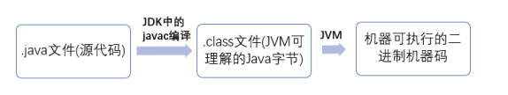
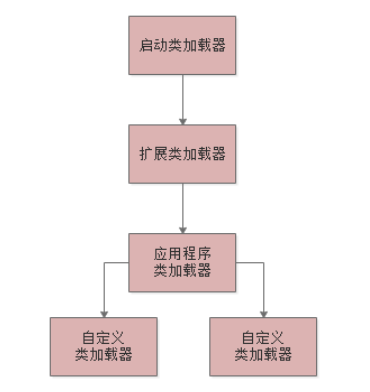

类加载机制
Java 程序从源代码到运⾏⼀般有下⾯ 3 步：

我们首先从“.java”代码文件，编译成“.class”字节码文件 然后类加载器把“.class”字节码文件中的类给加载到JVM中 ，接着是JVM来执行我们写好的那些类中的代码，整体是这么个顺序。
一个类从加载到使用，一般会经历下面的以下过程：
- 加载：当我们的代码中用到这个类的时候就会去加载这个类（.class）到JVM中
- 验证：根据Java虚拟机规范，来校验你加载进来的“.class”文件中的内容，是否符合指定的规范
- 准备：给这个类分配内存，给静态变量分配内存并且赋予初始值
- 解析：把符号引用替换为直接引用
- 初始化：显示初始化静态变量，调用静态代码块
类加载器
启动类加载器
Bootstrap ClassLoader，他主要是负责加载我们在机器上安装的Java目录下的核心类的 相信大家都知道，如果你要在一个机器上运行自己写好的Java系统，无论是windows笔记本，还是linux服务器，是不是都得装一下 JDK？ 那么在你的Java安装目录下，就有一个“lib”目录，大家可以自己去找找看，这里就有Java最核心的一些类库，支撑你的Java系统的 运行。 所以一旦你的JVM启动，那么首先就会依托启动类加载器，去加载你的Java安装目录下的“lib”目录中的核心类库。
扩展类加载器
Extension ClassLoader，这个类加载器其实也是类似的，就是你的Java安装目录下，有一个“lib\ext”目录 这里面有一些类，就是需要使用这个类加载器来加载的，支撑你的系统的运行。
应用程序类加载器
Application ClassLoader，这类加载器就负责去加载“ClassPath”环境变量所指定的路径中的类 其实你大致就理解为去加载你写好的Java代码吧，这个类加载器就负责加载你写好的那些类到内存里。
自定义类加载器
除了上面那几种之外，还可以自定义类加载器，去根据你自己的需求加载你的类。
双亲委派机制
JVM的类加载器是有亲子层级结构的，就是说启动类加载器是最上层的，扩展类加载器在第二层，第三层是应用程序类加载器，最后一 层是自定义类加载器。

如果应用程序类加载器需要加载一个类，并不会立马自己去加载，而是会去委托扩展类加载器加载，而扩展类加载器会委托启动类加载器去加载，当启动类加载器找不到这个类时，会让扩展类加载器去找，扩展类加载器找不到，于是就轮到应用程序类加载器自己去找了。这样的话，可以避免多层级的加载器结构重复加载某些类。